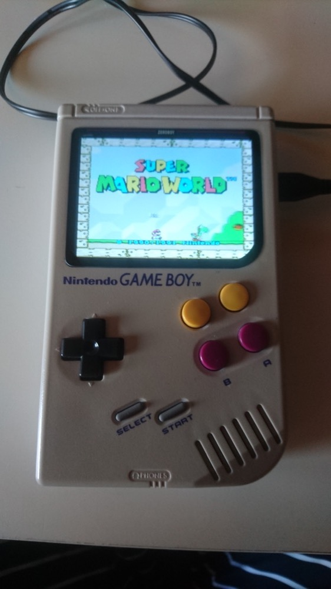

tgauweiler / Zeroboy
Introduction
The ZeroBoy is an old GameBoy Classic case with a Raspberry Pi Zero W inside There are many special parts for building this kind of project. I bought a board for the buttons, battery, HD display with HDMI cable and glass, audio amplifier, speaker, printed holder for the boards, charging board and various buttons.
Build
I used a case of a broken old GameBoy which was already pretty yellowed. Used my Dremel to cut out some plastic to make everything fit inside.
Next i used a hair bleach solution to make the case white again.
For that i wrapped the case with some solution in plastic and placed it in sunlight.

After some sunlight it looked much better.
Next all parts were fitted inside with hot glue and connected.
The new extra shoulder buttons and the power button were connected.
The whole cabling was pretty messy and if i would do it again, i would use a special all in one PCB instead.
Function test after finishing all the cables.
Fitted the new display glass and played. 
Conclusion
In the end this was a more pricy project for around 250€ in parts. Technically the soldering and cabling was not so hard, but also doesn’t looks so good. A HDMI port for connecting to a TV with bluetooth controllers would have been nice but was not doable.